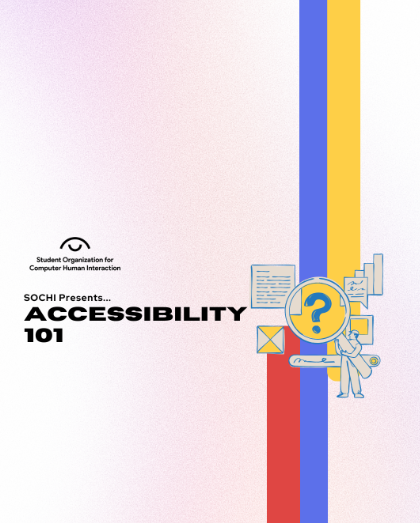

Bing bong boogie woogie, welcome back to SOCHI! Today is April Fools, as you may have guessed, so in celebration, we made this very awesome video here! Steven is ABSOLUTELY feeling unhinged today.
-Steven Liu, Reuben Crasto
Designing for Accessibility
Join us on Friday, April 4th at 2pm in NQ2175 as we dive into essential practices like color contrast, structure, target spacing, and accessible text. We’ll also work on creating accessibility-compliant UI components!
Recently, I had the absolute privilege of using Truth Social, Donald J. Trump's premier social media platform for an assignment in SI 110. And boy, was it a journey.
Truth Social pilots mostly like Twitter. Users can ‘Truth’ whatever’s on their minds, and ‘ReTruth’ others, just like tweeting and retweeting. But it also incorporates Groups, similar to Facebook. Most don’t have much engagement; people are NOT coming to Truth Social for funny cat pictures.
Speaking of engagement, Truth Social doesn’t disclose its active users, but estimates say 1.5 million monthly — well below even niche platforms like Bluesky. A ton of posts are from bots or hashtag spammers. Honestly, Trump is the main user — posting 20+ times a day. That said, real people do use it… which is the most disheartening part.
Truth Social is the mother of all echo chambers. It’s a breeding ground for conservative rhetoric — much of it toxic. I won’t even quote the worst. But it made me wonder how many posters are actually sincere.
One day, after a tragic helicopter crash in January, Trump blamed DEI efforts in the FAA. That same day, #DEI was the top trending hashtag. The responses were rough.
While it’s easy to discredit extremist views, I also felt a weird empathy. If I’d grown up differently or followed a different algorithm, who knows? It’s scary and human at once.
All in all, my Truth Social tour was chaotic, baffling, sometimes hilarious — but a reminder that we’re all shaped by the bubbles we live in. I’m never opening that app again…but maybe I left with a little more perspective.
Ooookk! Time for a game!